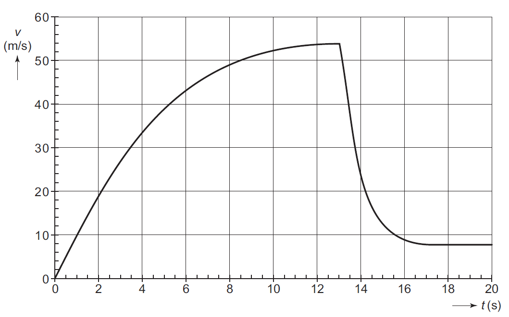

Sessie 4: farmacokinetiek¶
In de voorgaande sessies hebben we al gezien dat programmeren handig kan zijn in bepaalde situaties. In deze sessie gaan we dieper in op iets dat je waarschijnlijk al kent: het modelleren van verschijnselen. Grote kans dat je op de middelbare school modellen gemaakt hebt in Coach.1 En ook bij het huidige natuurkunde practicum gebruik je modellen om een verschijnsel te beschrijven, bijvoorbeeld om een verwachting op te stellen of je resultaten te interpreteren.
Maar wat bedoelen we eigenlijk met het woord model? Een model is een vereenvoudigde weergave van de werkelijkheid. Je beschrijft een verschijnsel met formules, waarbij je keuzes maakt over wat je wel en niet meeneemt in het model. Een model dat alles probeert te beschrijven, wordt al snel te complex om mee te werken.2 Een computer is daarbij een handig hulpmiddel. Berekeningen die met de hand onpraktisch zijn3, voert een computer snel uit. En door resultaten te visualiseren, maken we de uitkomsten van het model inzichtelijk.
Module matplotlib installeren
Voor het visualiseren van modellen gebruiken we de module matplotlib. Om deze module te kunnen gebruiken, moet je deze eerst installeren in de virtuele omgeving. Open in Visual Studio Code een terminal via het dropdownmenu Terminal en kies New Terminal. Installeer vervolgens de module met:
Parachutesprong¶
In deze sessie modelleren en visualiseren we de concentratie van een medicijn in het lichaam. Maar eerst oefenen we met een kleinere opdracht: een parachutesprong. Daarbij gebruiken we een examenopgave uit 2005.5
Aansluiting MNW-programma
De parachutesprong is een voorbeeld uit de klassieke mechanica. Dat is misschien niet het eerste onderwerp waar je aan denkt bij medische natuurwetenschappen, maar de onderliggende principes — krachten, beweging en weerstand — komen ook in de (bio)medische wereld voor. Bij het vak Fysica: mechanica, electriciteit en magnetisme (jaar 1, periode 4 + 5) leer je onder andere meer over deze principes. En bij de module Natuurkunde practicum (jaar 1, periode 1) kun je bij het experiment ultrasoondetector vallende objecten in meer detail bestuderen.
Hannes Arch is de eerste mens die een parachutesprong waagde van de Champignon, een 1800 meter hoge rots aan de noordwand van de Eiger in Zwitserland. We maken een model dat het verloop van zijn snelheid tijdens de sprong benadert. In dit model nemen we luchtweerstand mee. Voor de luchtweerstand geldt \begin{equation} F_w = k \cdot A \cdot v^2. \end{equation} Hierin is $k$ een constante waarvan de waarde geschat wordt op 0.37 kg$\,$m$^{-3}$, $A$ het frontale oppervlak van de parachutist inclusief parachute in m$^2$ en $v$ de snelheid in m$\,$s$^{-1}$.
De massa van Hannes mét parachute is 91 kg. Zolang de parachute nog niet is geopend, is het frontale oppervlak 0.80 m$^2$. Na 13 s opent Hannes zijn parachute. De parachute ontvouwt zich geleidelijk in 3.8 s tot een frontaal oppervlak van 42.6 m$^2$. Tijdens het openen van de parachute neemt het frontale oppervlak lineair toe in de tijd.
(Ver)ken je probleem
Voordat je gaat programmeren, is het handig om eerst het probleem te verkennen. Zo weet je welke grootheden en formules je in het model nodig hebt. Werk op papier en overleg vooral ook met een buurmens.
- Maak een overzicht van alle constante grootheden en hun waarden.
- De parachutesprong bestaat uit drie fases. Beschrijf elke fase. Noteer per fase de tijdsgrenzen en het frontale oppervlak.
- Schrijf op welke formules je nodig hebt om de snelheid op een tijdstip te berekenen. Gelden deze formules in alle fases, of verschilt dit per fase?
We programmeren het verloop van de snelheid tijdens de eerste 20 s van de parachutesprong, met tijdstappen van 0.1 s. We bouwen het programma stap voor stap op en testen de code regelmatig. Zo blijven de stappen behapbaar en kun je controleren of het model het verwachte verloop geeft.
Parachutesprong
- Maak een nieuw bestand aan met de naam
base_jumping.py. Definieer bovenaan in het bestand alle constante grootheden, zie opdracht (Ver)ken je probleem. - Bereken de snelheid voor alle tijdstappen in de eerste fase, de fase waarin de parachute nog niet is geopend. Maak een plot waarin je de snelheid $v$ uitzet tegen de tijd $t$. Test je code. Komt de plot overeen met wat je verwacht? Commit.
- Bereken nu ook de snelheid voor alle tijdstappen in de tweede fase, de fase waarin de parachute zich geleidelijk ontvouwt. Breid de plot uit met deze fase. Test je code. Komt de plot overeen met wat je verwacht? Commit.
- Bereken nu ook de snelheid voor alle tijdstappen in de laatste fase, de fase waarin de parachute volledig geopend is. Maak een plot van alle fases. Test je code. Komt de plot overeen met wat je verwacht? Commit.
Volgens de examenopgave zou het $v,t$-diagram er als volgt uit moeten zien.5 Komt jouw plot met dit diagram overeen?

Wat als?
Je hebt nu een model gemaakt van de parachutesprong. Onderzoek hoe het snelheidsverloop verandert wanneer je een parameter van het model aanpast. Kies één van de onderstaande situaties en plot verschillende scenario's in één grafiek. Geef de lijnen in de grafiek duidelijke labels en voeg een legenda toe.
- Hannes Arch heeft met parachute een massa van 91 kg. Hoe verandert het $v,t$-diagram voor een parachutespringer met meer of minder massa?
- Wat gebeurt er als de parachute zich niet volledig ontvouwt? Hoe verandert het $v,t$-diagram als het frontale oppervlak kleiner is?
Van Hannes Arch naar Felix Baumgartner
Op 14 oktober 2012 sprong Felix Baumgartner uit een capsule op 38969 m hoogte, in de stratosfeer. Hij bereikte een maximale snelheid van 1357.6 km/h en doorbrak daarmee als eerste mens de geluidsbarrière in vrije val. Na 4 minuten en 19 seconden opende hij zijn parachute. De sprong is op video vastgelegd.
Voor deze sprong volstaat het model dat we voor Hannes Arch hebben opgesteld niet meer. We hebben in dat model namelijk twee aannames gedaan die dicht bij het aardoppervlak redelijk zijn, maar op bijna 39 km hoogte niet meer opgaan: de zwaartekracht is constant en de luchtdichtheid is constant. In deze opdracht modelleren we de vrije val van Felix Baumgartner en vervangen we deze aannames door betere modellen.
We beginnen met de zwaartekracht. Hiervoor gebruiken we de gravitatiewet, die aangeeft hoe twee deeltjes elkaar aantrekken: \begin{equation} F_z = G \cdot \frac{m \cdot M}{(R + h)^2}. \end{equation} In deze vergelijking is $F_z$ de zwaartekracht tussen twee massa's, $G$ de gravitatieconstante, $m$ de massa van Felix Baumgartner mét uitrusting (geschat op 120 kg), $M$ de massa van de Aarde, $R$ de straal van de Aarde en $h$ de hoogte boven het aardoppervlak.
Zwaartekracht afhankelijk van hoogte
- Maak een nieuw bestand aan met de naam
stratos_jump.py. - Bekijk de code in het bestand
base_jumping.pyen kopieer de delen die je kunt hergebruiken naar het bestandstratos_jump.py. Je modelleert alleen de vrije val, code die samenhangt met het openen van de parachute heb je hier niet nodig. - Zoek de waarden op van de gravitatieconstante $G$, de massa van de Aarde $M$ en de straal van de Aarde $R$, en definieer deze bovenaan in het bestand samen met de andere constante grootheden.
- Modelleer de eerste 250 s van de vrije val. Pas het model zo aan dat de zwaartekracht bij elke tijdstap opnieuw wordt berekend op basis van de huidige hoogte. Houd de luchtdichtheid en daarmee de luchtweerstand voor nu nog constant. Tip: de hoogte neemt bij elke tijdstap af. Commit.
De luchtdichtheid verandert sterk met de hoogte. Om dit te modelleren gebruiken we het atmosfeermodel van NASA dat de atmosfeer in drie lagen verdeelt. In elke laag gelden andere formules voor de temperatuur en de luchtdruk. Als de luchtdruk bekend is, dan kan de luchtdichtheid berekend worden.
In het model voor Hannes Arch gebruiken we voor de luchtweerstand $$ F_w = k \cdot A \cdot v^2, $$ waarbij $k$ een constante is die enkele eigenschappen van lucht en het voorwerp samenvoegt. Nu de luchtdichtheid varieert met de hoogte, moeten we deze expliciet meenemen. De volledige formule voor de luchtweerstand is: \begin{equation} F_w = \frac{1}{2} \cdot \rho(h) \cdot C_w \cdot A \cdot v^2. \end{equation} Hierin is $\rho$ de luchtdichtheid die varieert met de hoogte $h$ en $C_w$ de weerstandscoëfficiënt van het voorwerp. Voor Felix Baumgartner in vrije val schatten we $A = 1 \text{ m}^2$ en $C_w = 1$.
Luchtdichtheid afhankelijk van hoogte
- Zoek op de website van NASA de formules op voor de temperatuur, de luchtdruk en de luchtdichtheid voor elk van de drie atmosfeerlagen.
- Voeg de drie lagen toe aan het model. Bereken bij elke tijdstap de temperatuur, de luchtdruk en de luchtdichtheid op basis van de huidige hoogte en gebruik de luchtdichtheid in de berekening van de luchtweerstand. Tip: gebruik
from math import expomexpte kunnen gebruiken bij de exponentiële functie. Commit.
Vrije val
Nu kun je het programma uitvoeren en zien wat de uitkomst is. Zorg dat je als uitkomst een $v,t$-diagram hebt. Vergelijk de maximale snelheid met de werkelijke waarde, 1357.6 km/h.
Model versus werkelijkheid
In een video van de sprong zijn de tijd en de snelheid zichtbaar, waardoor je het model direct kunt vergelijken met de werkelijke data. Kopieer onderstaande lijsten en zet ze bovenaan in het bestand stratos_jump.py:
Geluidsbarrière
De geluidssnelheid is afhankelijk van de temperatuur en dus van de hoogte. Bereken de geluidssnelheid op de hoogte waarop Felix Baumgartner de geluidsbarrière doorbrak en voeg deze als horizontale lijn toe aan het $v,t$-diagram. Commit.
Hoeveelheid paracetamol in het lichaam¶
De aanpak die je zojuist toegepast hebt, kunnen we ook in andere situaties gebruiken. Een voorbeeld uit de klinische chemie is farmacokinetiek: het vakgebied dat beschrijft hoe het lichaam een medicijn opneemt, verdeelt, afbreekt en uitscheidt. We zetten een model op waarin we de hoeveelheid van een medicijn in het lichaam over de tijd bijhouden.
Aansluiting MNW-programma
Farmacokinetiek sluit aan bij de MNW-leerlijn Scheikunde en klinische chemie. In het vak Klinische en analytische chemie leer je over analytische technieken om stoffen in geneesmiddelen en biologische monsters te meten. In het Practicum bio-analytische chemie pas je die technieken toe. Het model dat we hier bouwen laat zien wat er met een medicijn in het lichaam gebeurt nadat het is ingenomen, een basis die je later in het lab kunt koppelen aan echte metingen.
Voorspellen
Paracetamol is een veelgebruikte pijnstiller. Stel je neemt een tablet paracetamol van 500 mg. De halfwaardetijd van paracetamol — de tijd die nodig is om de hoeveelheid in je lichaam te halveren — is gemiddeld genomen 2.5 uur.6
- Hoe verwacht je dat de hoeveelheid paracetamol in je lichaam afneemt over de tijd? Schets een grafiek.
- Hoeveel procent van de paracetamol blijft er na elk uur over? Hoe bepaal je dit?
Het antwoord op deze vragen laat twee verschillende manieren zien om naar hetzelfde probleem te kijken. Met een analytische aanpak beschrijf je de hoeveelheid paracetamol in het lichaam met één formule. Daarmee kun je de hoeveelheid op elk willekeurig tijdstip direct berekenen. Met een numerieke aanpak kijk je juist wat er per tijdstap gebeurt. Beide aanpakken beschrijven hetzelfde probleem, maar de ene aanpak kan handiger zijn dan de andere, afhankelijk van wat je met je model wilt doen. We kijken naar beide aanpakken in iets meer detail.
Bij een analytische aanpak beschrijf je de afname van de hoeveelheid paracetamol met de formule \begin{equation} Q(t) = Q_0 \cdot \frac{1}{2}^{\frac{t}{t_{1/2}}}. \end{equation} Hierin is $Q$ de hoeveelheid op tijdstip $t$, $Q_0$ de beginhoeveelheid en $t_{1/2}$ de halfwaardetijd. Na één halfwaardetijd resteert de helft van de beginhoeveelheid: $Q=\frac{1}{2}Q_0$. Na twee halfwaardetijden resteert een kwart: $Q=\frac{1}{2}^2 \cdot Q_0 = \frac{1}{4} Q_0$. Voor paracetamol is de halfwaardetijd gemiddeld 2.5 uur. Na 2.5 uur is dus de helft van de beginhoeveelheid over en na 5 uur een kwart.
Bij de numerieke aanpak bekijk je wat er per tijdstap gebeurt. Je berekent hoeveel paracetamol er na één tijdstap overblijft en gebruikt die hoeveelheid vervolgens als beginpunt voor de volgende tijdstap. De fractie $r$ die na één tijdstap $\Delta t$ overblijft, is \begin{equation} r = \frac{1}{2}^{\frac{\Delta t}{t_{1/2}}}. \end{equation} Voor paracetamol met een halfwaardetijd van 2.5 uur en een tijdstap van 1 uur geldt \begin{equation} r = \frac{1}{2}^{\frac{1}{2.5}} \approx 0.758. \end{equation} Na elke tijdstap van 1 uur blijft dus ongeveer 75.8% van de hoeveelheid over. De hoeveelheid na de eerste tijdstap bereken je met \begin{equation} Q_1 = r \cdot Q_0 \end{equation} en de hoeveelheid na de tweede tijdstap bereken je vervolgens met \begin{equation} Q_2 = r \cdot Q_1. \end{equation} Algemeen geldt: \begin{equation} Q_{n+1} = r \cdot Q_n. \end{equation} Elke tijdstap bereken je dus aan de hand van de hoeveelheid in de vorige tijdstap. En dit is precies de manier waarop je bij de opdracht van de parachutesprong het verloop van de snelheid hebt berekend.
Vergelijken
Leveren de twee aanpakken daadwerkelijk hetzelfde resultaat op? Je gaat dit onderzoeken door beide aanpakken te programmeren en de resultaten te vergelijken.
- Maak een nieuw bestand aan met de naam
analytical_approach.py. Definieer bovenaan in het bestand de beginhoeveelheid paracetamol en de halfwaardetijd. Bereken met de analytische formule, vergelijking 4, de hoeveelheid paracetamol in het lichaam voor elk uur gedurende de eerste 24 uur. Plot het resultaat. Commit. - Maak een nieuw bestand aan met de naam
numerical_approach.py. Definieer bovenaan in het bestand de beginhoeveelheid paracetamol en de halfwaardetijd. Bereken de fractie $r$ met behulp van vergelijking 5. Gebruik deze fractie vervolgens om de hoeveelheid paracetamol in het lichaam stap voor stap te berekenen voor de eerste 24 uur, met tijdstappen van 1 uur. Plot het resultaat. Commit. - Werk voor deze opdracht samen met een buurmens. Eén van jullie voert het bestand
analytical_approach.pyuit en de ander het bestandnumerical_approach.py. Vergelijk beide grafieken. Komen de resultaten overeen?
Je hebt gezien dat de analytische en numerieke aanpak voor één dosis paracetamol hetzelfde resultaat geven. Maar wat gebeurt er als we het model uitbreiden?
Uitbreiden
Stel dat je na 6 uur een tweede tablet paracetamol van 500 mg inneemt. Bespreek met een buurmens onderstaande situaties. Je hoeft hiervoor je programma nog niet aan te passen.
- Kun je de analytische aanpak gebruiken om de hoeveelheid paracetamol in het lichaam te berekenen? Zo ja, hoe zou je dat aanpakken?
- Kun je de numerieke aanpak gebruiken om de hoeveelheid paracetamol in het lichaam te berekenen? Zo ja, hoe zou je dat aanpakken?
- Welke aanpak zou je kiezen als je een tweede tablet inneemt? En welke aanpak zou je kiezen als je vaker een nieuw tablet inneemt? Leg uit waarom.
De analytische aanpak is voor één dosis heel handig, je kunt voor ieder tijdstip direct berekenen hoeveel paracetamol er nog in het lichaam aanwezig is. Ook voor een tweede dosis is een analytische aanpak nog mogelijk, maar het wordt wel al wat meer gedoe. Maar hoe verder je het model uitbreidt, hoe ingewikkelder de analytische aanpak wordt. Wat als je meerdere doses inneemt? Wat als je een dosis vergeet of juist later inneemt? En wat als de snelheid waarmee paracetamol wordt afgebroken verandert in de tijd? Bij de numerieke aanpak hoeven we voor deze uitbreidingen weinig te veranderen. Bij iedere tijdstap berekenen we hoeveel paracetamol er nog aanwezig is vanuit de vorige tijdstap en voegen we toe wat er tijdens die tijdstap wordt ingenomen. De berekening per tijdstap blijft hetzelfde. We kunnen daarom nieuwe situaties aan het model toevoegen zonder de hele berekening opnieuw te programmeren.
Een numerieke aanpak is niet per se beter dan een analytische aanpak. Voor eenvoudige problemen kan een analytische aanpak juist heel handig zijn. Een numerieke aanpak wordt vooral interessant wanneer je het model wilt uitbreiden of wanneer een analytische oplossing moeilijk of niet beschikbaar is, zoals bij de opdacht van de parachutesprong.
Meerdere doses
Een patiënt in het ziekenhuis krijgt paracetamol als pijnstiller. De patiënt neemt elke 6 uur een tablet van 500 mg in, te beginnen op tijdstip $t=0$.
- Schets hoe je verwacht dat de hoeveelheid paracetamol in het lichaam gedurende de eerste 24 uur verloopt. Geef duidelijk de momenten aan waarop de patiënt een nieuwe tablet inneemt.
- Maak een nieuw bestand aan met de naam
paracetamol.py. Kopieer de code uit het bestandnumerical_approach.pynaar dit nieuwe bestand. Pas het model aan zodat de patiënt elke 6 uur een tablet van 500 mg inneemt. Bereken de hoeveelheid paracetamol in het lichaam voor de eerste 24 uur en plot het resultaat. Commit. - Vergelijk de plot met je voorspelling. Komt het verloop overeen met wat je verwachtte? Zo niet, waar zit het verschil?
Therapeutisch venster¶
Tot nu toe hebben we de hoeveelheid paracetamol in het lichaam voor verschillende tijdstappen berekend en geplot. Maar om te beoordelen of een medicijn ook daadwerkelijk werkt en niet schadelijk is, kijken we naar de concentratie van het medicijn in het bloed, niet naar de hoeveelheid in het lichaam. Die concentratie vergelijken we daarna met het therapeutisch venster: de zone waarbinnen een medicijn effectief is. De grenzen van het therapeutisch venster voor paracetamol verschillen iets per bron, sommige bronnen hanteren 5-20 mg$\,$l$^{-1}$7, andere 10-20 mg$\,$l$^{-1}$8 en weer andere 10-30 mg$\,$l$^{-1}$9. De ondergrens van 5 mg$\,$l$^{-1}$ komt overeen met de minimale effectieve concentratie voor koortsvermindering, voor pijnstilling ligt de grens rond de 10 mg$\,$l$^{-1}$. In onze opdrachten werken we met een therapeutisch venster van 5-20 mg$\,$l$^{-1}$.
Huidige modellen zijn sterk vereenvoudigd
De modellen in de opdrachten zijn sterk vereenvoudigd en beschrijven maar deels hoe paracetamol zich in werkelijkheid gedraagt. Trek er daarom geen conclusies uit over hoe jij paracetamol zou moeten gebruiken. Volg altijd de bijsluiter of het advies van een arts of apotheker.
Om van een hoeveelheid naar een concentratie te gaan, hebben we het verdelingsvolume $V_d$ nodig. Wanneer je een medicijn inneemt, verspreidt het zich over het lichaam. Een deel blijft in het bloed en een deel wordt opgenomen in lichaamsweefsels. De concentratie van het medicijn meten we in het bloed, maar die weerspiegelt niet de totale hoeveelheid in het lichaam. Het verdelingsvolume koppelt dit aan elkaar: het is het hypothetische volume waarin de totale hoeveelheid van het medicijn zich zou moeten bevinden om de gemeten bloedconcentratie te verklaren.
Voor paracetamol is het verdelingsvolume 1 l$\,$kg$^{-1}$.6 Voor het berekenen van de concentratie vermenigvuldigen we $V_d$ eerst met de lichaamsmassa $m$ om het totale verdelingsvolume in liters te krijgen. De concentratie berekenen we dan met \begin{equation} C = \frac{Q}{V_d}. \end{equation} 10 Voor een persoon van 80 kg en een dosis paracetamol van 500 mg geeft dat: $C$ = 500 mg / (1 l$\,$kg$^{-1} \cdot$ 80 kg) = 6.25 mg$\,$l$^{-1}$.
Merk op dat het model een vereenvoudiging is. We gaan ervan uit dat de volledige dosis direct beschikbaar is. In werkelijkheid loopt de concentratie na inname eerst geleidelijk op naar een piek, omdat het medicijn tijd nodig heeft om vanuit de maag en darmen in het bloed te worden opgenomen. Daarna daalt de concentratie weer. Bovendien gaat een deel van het medicijn verloren bij de eerste passage door de lever. Nieuwsgierig naar wat er echt gebeurt? Op https://trc-p.nl/23/ lees je er meer over.
Het therapeutisch venster in beeld
In het bestand paracetamol.py heb je de hoeveelheid paracetamol in het lichaam over de tijd berekend en geplot, waarbij elke zes uur een nieuwe dosis wordt toegediend. We zetten de hoeveelheid nu om naar concentratie en vergelijken die met het therapeutisch venster.
- Pas de code in het bestand
paracetamol.pyaan zodat de concentratie tegen de tijd geplot wordt voor een persoon met een massa van 80 kg. Commit. - Voeg de onder- en bovengrens van het therapeutisch venster, 5-20 mg$\,$l$^{-1}$, toe aan de plot als horizontale lijnen. Hiervoor kun je gebruikmaken van
plt.axhline(). Zorg voor duidelijke labels en een legenda. Commit. - Bekijk de plot over de volledige 24 uur. Ligt de concentratie paracetamol binnen het therapeutisch venster?
- Bij hevige pijn, bijvoorbeeld na een operatie, wordt soms de maximale dosering paracetamol voorgeschreven. De patiënt neemt dan vier keer daags twee tabletten paracetamol van 500 mg. Pas de code aan en bekijk de plot over de volledige 24 uur. Hoe verhoudt de concentratie zich tot het therapeutisch venster?
- Artsen stemmen de dosis van sommige medicijnen af op het lichaamsgewicht van de patiënt.11 Maar waarom eigenlijk? Pas de massa in het model aan naar 60 kg. Wat verandert er aan de concentratie ten opzichte van een massa van 80 kg? En bij 120 kg?
- De halfwaardetijd van paracetamol is gemiddeld 2.5 uur, maar varieert tussen de 1 en 4 uur6 door onder andere individuele verschillen in levermetabolisme. Pas de halfwaardetijd aan naar 1 uur en naar 4 uur. Wat verandert er aan de concentratie ten opzichte van 2.5 uur?
Van paracetamol naar fenytoïne¶
Het model dat we voor paracetamol hebben gebouwd, beschrijft de concentratie paracetamol in het bloed redelijk goed, al komt de piekconcentratie bij een enkele dosis soms maar net boven de ondergrens uit. Wat paracetamol relatief veilig maakt, is dat de toxische grens ver boven de bovengrens van het therapeutisch venster ligt (150 mg$\,$l$^{-1}$8). Maar niet elk medicijn heeft zo'n ruime marge tot de toxische grens. Bij sommige medicijnen is die marge veel kleiner. Fenytoïne is daar een goed voorbeeld van.
Fenytoïne is een medicijn dat bij epilepsie kan worden voorgeschreven. Het onderdrukt overmatige elektrische activiteit in de hersenen en voorkomt daarmee epileptische aanvallen. Vanuit farmacokinetisch oogpunt is fenytoïne bijzonder omdat de toxische grens samenvalt met de bovengrens van het therapeutisch venster. De concentratie in het bloed moet tussen de 8 mg$\,$l$^{-1}$ en 20 mg$\,$l$^{-1}$ liggen.12 Onder de 8 mg$\,$l$^{-1}$ is het medicijn onvoldoende werkzaam en bestaat er het risico op een epileptische aanval. Boven de 20 mg$\,$l$^{-1}$ treedt toxiciteit op12, er is geen veiligheidsmarge.
Net als bij paracetamol maken we ook hier een vereenvoudigd model. We gaan ervan uit dat de absorptie onmiddellijk en volledig plaatsvindt en dat het medicijn zich gelijkmatig verdeelt over het verdelingsvolume. De werkelijkheid is natuurlijk complexer.
Veilige dosis
- Maak een nieuw bestand aan met de naam
fenytoine.py. Kopieer de code uit het bestandparacetamol.pynaar dit nieuwe bestand. Gebruik de volgende waarden voor fenytoïne: - Modelleer de concentratie fenytoïne in het bloed gedurende 20 dagen voor een persoon met een massa van 80 kg. Kies zelf een dagelijkse dosis. Plot de concentratie tegen de tijd en geef het therapeutisch venster met horizontale lijnen weer. Zit je binnen het therapeutisch venster? Commit.
- Neem twee patiënten: patiënt 1 heeft een massa van 80 kg en patiënt 2 een massa van 60 kg. Welke dagelijkse dosis is voor elk van hen het meest geschikt?
Vergeten dosis
In de opdracht Veilige dosis heb je een geschikte dagelijkse dosis bepaald voor een patiënt. Gebruik dit als startpunt bij deze opdracht.
- Stel dat de patiënt op dag 12 de dosis vergeet. Pas het model zo aan dat er op dag 12 geen dosis wordt ingenomen. Wat gebeurt er met de concentratie fenytoïne in het bloed? Commit.
- Soms is de neiging om de vergeten dosis de volgende dag in te halen. Simuleer wat er gebeurt als de patiënt op dag 13 een dubbele dosis neemt. Waarom wordt afgeraden dit te doen? Commit.
- De patiënt realiseert zich later op dag 12 dat die de dosis vergeten is. Bekijk wat er gebeurt als de patiënt de dosis alsnog inneemt na 6, 12 of 18 uur. Tot hoe laat op dag 12, afgerond op hele uren, kan de patiënt de dosis nog veilig inhalen? Geldt deze grens ook voor een patiënt met een andere massa en een andere dosis?
Automatisch zoeken
In de opdracht Vergeten dosis heb je handmatig bepaald tot hoe laat de patiënt een vergeten dosis nog veilig kan inhalen. Dat werkt, maar het is ook omslachtig. Je kunt ook de computer dat werk laten doen.
Breid je programma uit met code die voor elk uur op dag 12 controleert of het nog veilig is om de dosis in te halen. Welke grens binnen het therapeutisch venster wil je hanteren als veilige grens? Laat je programma de laatste veilige inhaaltijd in de terminal printen en geef de bijbehorende plot. Test je programma voor patiënten met verschillende massa's en doses. Doet je programma wat je verwacht? Commit.
-
Stel je modelleert een vallend voorwerp. In werkelijkheid speelt luchtwrijving een rol, maar die bijdrage is vaak verwaarloosbaar klein. In het model neem je daarom de luchtwrijving niet mee. Niet omdat je het effect vergeet, maar omdat het model anders onnodig ingewikkeld wordt. ↩
-
Een historisch voorbeeld: natuurkundige Hendrik Antoon Lorentz leidde van 1918 tot 1926 de Staatscommissie Zuiderzee, die de effecten van een afsluitdijk op de waterstanden moest berekenen.4 Dit gebeurde volledig met de hand, een enorme klus zonder computer! ↩
-
https://www.lorentz.leidenuniv.nl/history/zuiderzee/zuiderzee.html ↩
-
https://www.nvon.nl/examen/examen-2005-1-vwo-natuurkunde-12 ↩↩
-
https://www.farmacotherapeutischkompas.nl/bladeren/preparaatteksten/p/paracetamol ↩↩↩
-
I. A. Gibb en B.J.Anderson. "Paracetamol (acetaminophen) pharmacodynamics: interpreting the plasma concentration". In: Archives of Disease in Childhood 2008.93 (2008), p. 241-247. ↩
-
Het verdelingsvolume $V_d$ wordt uitgedrukt in l$\,$kg$^{-1}$, dit is het volume per kilogram lichaamsgewicht. Maar bij het rekenen heb je het totale verdelingsvolume in liters nodig, dat ook wordt aangeduid met $V_d$. Je zou kunnen zeggen dat de vergelijking eigenlijk $C = Q / (V_d \cdot m)$ zou moeten zijn. In de farmacokinetiek is het echter gebruikelijk om de $m$ niet expliciet te noteren. In de handleiding volgen we deze conventie, wat betekent dat je altijd even moet bedenken in welke eenheid je het verdelingsvolume nodig hebt. ↩
-
Voor paracetamol gebeurt dit bij volwassenen doorgaans niet, omdat de toxische grens ruim boven het therapeutisch venster ligt. De concentratieverschillen tussen volwassenen met verschillend lichaamsgewicht zijn klein genoeg om binnen veilige grenzen te blijven. Voor kinderen geldt dat echter niet, door hun lagere lichaamsgewicht moet de dosis worden aangepast. Kijk maar eens in de bijsluiter van paracetamol! ↩
-
https://www.farmacotherapeutischkompas.nl/bladeren/preparaatteksten/f/fenytoine ↩↩↩